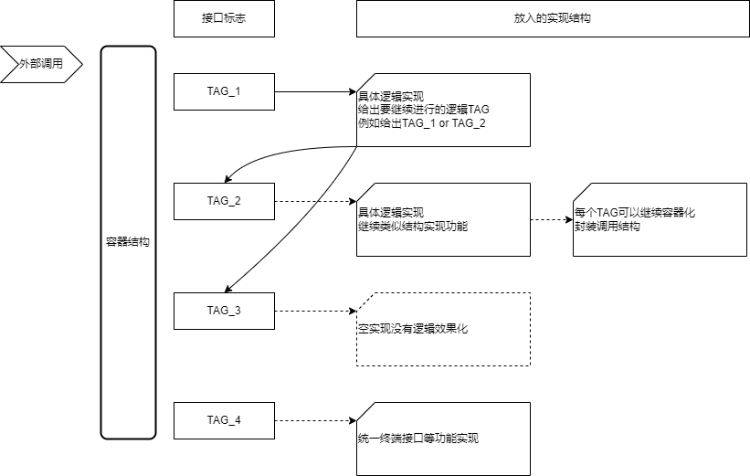
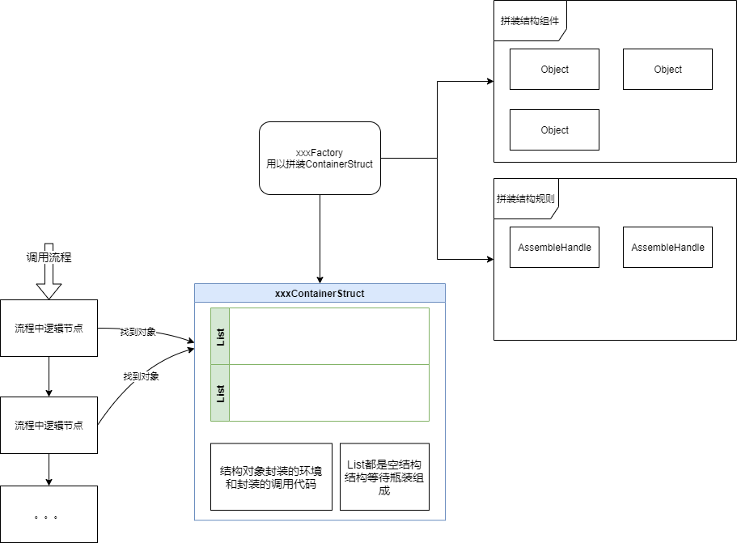

01容器化理论
本文，主要总结我在写游戏代码过程中对于容器类型结构的使用。
容器化理论：一个容器可以认为是一种结构特性的封装。例如常见的线性结构，如数组，链表等，树性结构，如二叉树等，以及hash表一类。容器只定义了内部元素之间的结构特点，但是没有定义内部元素的特征。例如一个线性容器，可以按顺序遍历元素，但是没有规定死内部元素特征。在此基础之上，容器还可以实现接口调度的功能。规定需要间接调用的接口特征后，通过调用容器的固定接口，间接调用到容器内部对象的指定接口来实现解耦工作。
所以可以动态的组装该容器来实现结构调用上的解耦以及功能拆分化。
因此所谓容器化理论，核心点便是围绕容器结构来构建代码结构。通过容器来实现以下两点功能：
- 模块之间的通信通过定义协议接口来传递，而传递用的实例数据则通过容器实例来实现，而容器内容则动态注入。进而可以实现数据结构上的解耦。
- 一个复杂功能的实现通过容器实例来实现，通过定义容器拼装的方式，和接口调用，来获得高可变可动性的功能。
关于这两点的详细阐述将在后面两部分逐步展开。
实际上这种特性也隐含于计算原理，lambda演算等相关内容之中。在《计算机程序的构造和解释》中作者，通过lisp语言阐述了跟容器化相关的想法，称之为"将序列作为约定接口"。在第三部分中将尝试说明这两种结构拥有相同特性。即容器可以对调用链进行抽象封装，将函数调用链隐藏到实例容器数据结构中去。但是《计算机程序的构造和解释》则是从跟底层角度提出了构造，其更具理论化一些。
为方便阐述先从我们软件工程师常见的设计模式出发：
Dispatcher结构
在游戏开发过程中我们会经常碰到诸如，技能，buff等概念，或者任务，道具等系统。对于所有这些实际上都是有着固定回调点操作的，其封装或多或少不太一样，但是存在着潜在结构上的一致性。就是某些流程会固定的触发一些事件，另一边接受事件并且运行相应的处理逻辑。我们一般会使用Dispatcher设计模式来进行解耦操作。
这是一种最常见最常用的解耦结构。其本质是一个监听者模式加单例结构，结构大致如下图。
该结构特征实际上通过一个中心节点，Dispatcher对象，加一个dict（map）的结构，解耦了分发者和回调者之间的调用过程。
在此为方便说明，定义一下回调者角色和分发者角色：
回调者：将自身函数注册到目标事件上面的对象。
分发者：固定分发事件对象，Dispatcher会根据现在事件列表依次转调用。
现在看dispatcher运行时的过程：

- 当回调者xxxInstance实例被执行时，其会将函数对象注册到Dispatcher对象中去。而Dispatcher则实际上将该函数指针放入到List例表中去。
- 当分发者Notifier运行时，其会找到Dispatcher实例对象，并分发指定事件。Dispatcher则会按顺序依次调用事件对应列表中的每个函数指针以进行回调。
- 注意的是，Dispatcher为了区别回调者的不同，注册进去的函数实际上需要保存目标对象引用，即Dispatcher实际上潜在引用了回调者。如果回调者外部销毁，也需要在注销Dispatcher中引用。
再分析这个结构在架构上的特征总结下来有几个特点：
- 分发者不再知道回调者对象是什么：被调用的接口已经绑定在了一个事件上面。更准确的说，是绑定在了一个函数签名上面，发起该事件，只要遵守该函数签名，那么调用就是可以的，允许的。
- 分发者不再持有回调者对象：相对应的，他现在持有一个Dispatcher对象，该对象通过自身的数据结构来转发调用。从另一方面来讲，分发者也必须知道事件的函数签名，以便传进去正确的参数。
- 回调者不知道自己什么时候会被回调：回调函数接口被注入到Dispatcher以后，就等待着被分发者调用。并不知道目标被调用时的情况，当函数回调时往往要保存调用的上下文。
- 回调者自己运行的时候去注册回调结构：回调者同时承担着注册调用和被调用的角色。
现在更深入一下可以发现，其实该结构体系用两点特征来完成了解耦和动态化。
- 这种调用流，被Dict和List容器结构所封装了。可以动态增删调用接口。当没有注入的时候便不再进行回调。
- 调用的耦合变成了对事件函数签名的耦合。
这其中两个部分都是非常有意思的结构特征，先暂且把这两种结构特征定义为：函数签名绑定和容器封装结构。而这两个结构实际上也是设计模式中绝大部分模式用来解耦的实际落脚点。实际上这两个结构也是各种现代架构中不可或缺的一部分。下面讨论这两部分的特征。
函数签名绑定特征
如果了解过一些面向对象语言如C#，Java，C++等，可能对函数签名有所了解。在此使用C++函数指针的概念来描述：
定义： 一个函数的函数签名即该函数的返回类型和所有参数类型构成的数组。具有相同函数签名的函数，称之为该函数签名类型的一个值。
例如：
return_type (*pointer_name)(list_of_parameter_types);
// C++中函数指针的一般形式
long (*pfun)(long*,int);
//函数签名为 (返回类型long)(参数类型long* int)
这个定义是有一定意义的，因为若要进行一个函数调用，那必须知道函数的函数签名，否则是不能调用的。相应的，两个完全一样的函数接口，如果check一样，都是全定义域上(即所有输入上)可计算的。那么调用两个函数都将正确执行，并且与如何获取到函数无关。
所以函数签名实际上是对函数的最小耦合。可以认为函数签名是一个函数集合，该集合符合函数签名描述的特征。而该集合中的函数是可以互相替换执行的。
而这也与JAVA，C#中接口封装不谋而合。可以这么说，对于分发者，调用的不再是目标对象上的方法，而是对统一接口的绑定。实现该接口的对象，都可以被分发者正确调用，由此来实现对类对象层面(代码书写层)的绑定。不过实际上分发者在调用时，分发者还是要持有实现接口的实例对象。也即在调用对象时，还是要取到实例对象，存在着实例获取流程的耦合，所以Dispatcher这种结构，设立了统一的中心点Dispatcher来进行容器实例的获取。
从语言层面讲，实际上函数跟数据本身就有所不同。函数在编译器编译后就已经确定，并且放在固定区域。例如C++，代码会被编译成代码段，放在.text区域，该区域静态分配。这是合理的，在不存在状态的情况下，函数就是一个计算过程，没必要存在多个拷贝。但是数据状态却是有可能不一样的。
再从一些其他角度来看，C++为了实现多态，其实际是通过一个虚表来实现的，当调用一个override方法时，实质会根据偏移调用到虚表的指定位置，而该指定位置的函数指针将根据当前类被替换成不同函数。所以本质来看，重载调用只是绑定了函数签名来进行调用的，通过容器，虚表，替换来实现调用不同功能。
但是，另一方面值得注意的是，数据和函数又有一定的共同特点。实际上函数也是数据的一种，这在图灵悖论中已经有过体现，将一个程序集当做一个字符串输入到另一个程序之中。从lambda演算视角来看，一个程序集可以认为是有一系列递归，嵌套的函数调用构成。这些内容最后也会体现出
容器封装结构特征
容器是代码结构中经常使用的一种概念。例如C++中将容器分为几类，顺序容器(vector,list,deque)，关联容器(map,set)等。广义的来讲，我们可以如下定义容器：
定义： 容器是指一种数据结构，其定义了内部对象实例之间的组成关系，但是没有依赖内部对象的数据结构。
而容器封装结构就是指，使用容器来作为代码层级依赖的中间部件实现解耦。将模糊，多功能的对象封装层一个容器，所有代码依赖该容器，但具体的功能则知晓其运行时应有的数据结构，通过容器的结构获取该具体结构来实现功能和扩展。
首先如前面Dispatcher结构，我们可以把Dispatcher当成一个我们目标调用对象。我们分发者分发的每次事件，实际上都是在尝试调用该对象的某类函数签名接口。那么该对象实际就成了一个功能的动态承载者，当其没有适配接口便不进行调用，拥有该接口的实现时便进行运算调用。
所以容器在Dispatcher中承担了两个作用，
- 接口调用分离，调用接口语义固定，但是执行效果由注入决定。
- 动态功能结构处理生成，一开始容器没有任何功能，后面通过注入功能来进行功能实现。
此外在此基础之上，容器化结构可以抽象封装调用链结构。
例如假设有一个调用链，A调用B，B调用C，如果没有返回值的情况下进行尾调用。实际上便可以结合函数签名绑定设计一个链表，其会固定沿顺序调用。那么对于这种调用形式，如果在没有返回值运行的情况下，可以分别将A，B，C三个对象调用函数放在链表中，然后按顺序依次调用即可产生相同的效果。那么这个调用链的结构实际上就被容器加上调用规则所取代了。而在这个基础上，被调用的函数被动态装配，而不是在代码层写死调用结构。
现在再假设在上面调用链的基础上，存在条件分支情况。那么可以将条件筛选和实际运行函数拆开，封装成两个函数对象。对于条件筛选函数，其会返回一系列标志位。然后根据标志位将实际运行函数放在对应的槽位中即可构成解耦的条件筛选调用，其结构大致如下图：
而这个调用实际上也可类比堆栈调用的方式。根据一些条件，将每一个调用函数压栈，来进行运行，然后运行完出栈。那么容器结构实际上就承担了这个调用链结构的封装。被压入栈的结构，就是栈在正常情况下应当运行的结构链。
在我个人看来实际上这种容器结构的基本封装了计算的特征。或者说lambda演算的结构。我们放在最后再讨论一些相关功能。
容器化封装结构
上面已经分析了Dispatcher底层解耦的两个特点，可以看出来，实际上容器结构的特征才是解耦的核心重点。Dispatcher只是以一种常见的，生活中的方式对该容器结构进行了组装。而且关注容器可以发现其其实隐含着更多底层结构和思想，所以有理由将关注点落实在容器封装结构。
现在让我们抛开Dispatcher结构，让我们单纯关注中间带有容器结构的那一部分，为方便说明，将这个结构称之为容器化结构。
该结构面临着两个关键问题。
- 组装结构：调用链封装结构以什么样的方式组装。例如Dispatcher就是目标对象运行的时候注册操作。
- 调用结构：以什么方式来调用各个接口。例如Dispatcher中就是list，线性调用结构。如何处理控制节点执行与否，执行时的上下文环境
另一方面可以发现这两个问题也与需求分析，架构经验相关联：
- 组装结构：怎么样的组装方式符合需求，是否将所有组合结构细分化了。
- 调用结构：调用的接口签名语义是否合理，两个接口功能是否重叠。
- 层级结构：一层容器是否符合现有扩展性，动态性。
而这些问题实际都是具体跟你要做什么内容相关联的，虽然有迹可循，不过暂且不在讨论范围内。
相比之下我们更关注容器化结构中每种细节结构的实现，以及其对应的特性，功能性，扩展性，动态性等特点。最后想去落实到一些数学层面，尝试去看到整个游戏系统体验的承载者。
组装结构
即容器的构成流程，根据组装时点，方式我们可以可以这么分类：
自主添加回调
自主添加回调方式，没有一个显示的拼装过程，即Dispatcher的结构特点。对于分发者来说，其知道有一个中心点容器对象实例。分发者会固定回调到中心点实例，中心点实例根据自身注册表转发回调。而对于回调者来说，其也知道有一个中心点容器对象实例。回调者会根据状态来注册函数
这个情况有以下特点：
- 中心点没有特别的语义，承担着转发作用。
- 中心点的构造实际取决于回调者的注册方式。即回调者运行过程中会添加一些回调函数。
- 分发者知道中心点的通用接口，而不知道具体执行逻辑。
- 中心点cache了回调者对象，以至于回调者销毁，不再监听的时候要手动取消中心点注册。
所以这种结构看上去来说是一种暂存结构。通过中心点暂时保存两个对象(分发者，回调者)间的通信方式。而从路由方式来说，则是无路由方式，中心点暂时存储了目标对象，在分发者调用时，直接分发到cache对象上去，双方都是知道中心点存在。从解耦方面来看，可以认为是讲原来对对象的依赖，变成了对中心点固定接口的依赖，而中心点隔离了真实的执行状况。
拼装容器结构
该方式与自主添加回调方式理念上的区别在于，组装的时间点。该容器对象实际就是功能的承载者，对于其调用者知道是该对象上的某类功能，但是其存在与否则是不确定的。更重要的区别在于，该容器对象就是目标功能承载者，目标容器销毁，功能调用判定
该结构有一个工厂，会根据一些装配表（或者固定数据，或者实例数据流）来组装容器结构对象，并将该结构放在某个位置等待去调用。其他对应结构可以通过自己的路由方式找到该结构。
这个情况有以下特点：
- 拼装好的结构实际上类似于Dispatcher的中心点结构。
- 调用者知道中心点的通用接口，而不知道具体执行逻辑。
- 该结构可以不依赖回调者的运行状况，事先就装配而成目标运行结构。运行结构消失，找不到
- 调用者会知道该数据结构实例，在某些定点上按照规则遍历该结构中的固定接口位置。
所以可以看到原来Dispatcher结构的 通过生成拼装结构，将结构的生成和调用完全解耦。
其实可以看到两种方式区别在于 共同点在于：存在则调用，不存在则无视的设计理念上
另一方面可以从拼装容器结构看到，数据驱动结构拼装
调用结构
对于调用结构来说，实际上就固化的规则的一部分。是整个需求中的不动点。例如目标对象一定有某类功能，那么可以直接路由到该功能应用上并且调用对应。而该功能可能也是一个容器对象，其拥有着自己的调用逻辑。
所以事实上在代码中这个过程就是一个反复固定调用，注入，运行中回调，再固定调用的过程。那么对对于何时固定调用，何时自己去注册回调就有着很多问题了。这跟程序员从需求中提取出需求不变点息息相关。
举例来说，现在假设有一个游戏中ACT技能对象。那么该技能对象，是不方便直接封装的。因为技能多变，效果多样，形式也很多。即使一个确定的技能也会收到其他各种影响。所以该技能对象可以给定一个动态容器构造。而技能概念一般都是每个对象存在一个的，即可以放在固定位置，那么可以直接引用到该对象上进行调用。
容器化结构特点
现在简单说明一下，容器化结构实现了什么，其有什么特点导致架构上具有扩展性，可变性。什么结构带来了游戏运行时的流程体验。从上面各种讨论过来我们可以看到以下几个重要特点：
- 接口调用分离，调用接口语义固定，但是执行效果由注入决定。
- 存在则调用，不存在则无视
- 动态功能结构处理生成，一开始容器没有任何功能，后面通过注入功能来进行功能实现。
- 功能的生命周期控制上移，由容器来决定
- 数据结构的隔离，外部功能都是知道功能承载容器的存在，但是并不清楚目标上有什么功能结构。通过共有的数据字段判定后，具体功能跟内部对应功能对接。
引申思考
层次化作为接口
在《计算机程序的构造和解释》一书中，基于Pascal语言阐明了层次化接口的概念。Pascal作为一个面向过程的语言，其写法非常类似于Lambda演算的方式。而书中说到基于Pascal语言的层次化即，
Lambda演算核心
在上面我们提到了Lambda演算，Lambda演算做为跟图灵机等效的计算模型，其拥有一样强大的计算能力和对计算本身的洞察。而上面的结构在lambda演算中早已有其体现。
关于Lambda的概念和效果在后面也会反复提及，甚至图灵机的计算模型也会不断出现。其实可以发现这两个计算模型跟我们软件的架构息息相关的，正如所有计算机都是图灵机的实例一般，架构，语言等其实都是在计算模型上的深挖。对计算模型不断的研究其实可以发现更多精妙的结构和技术。